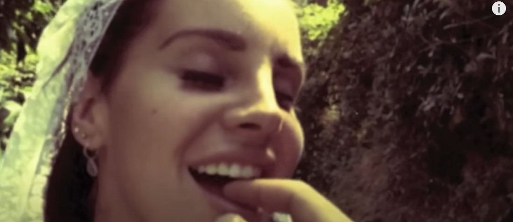
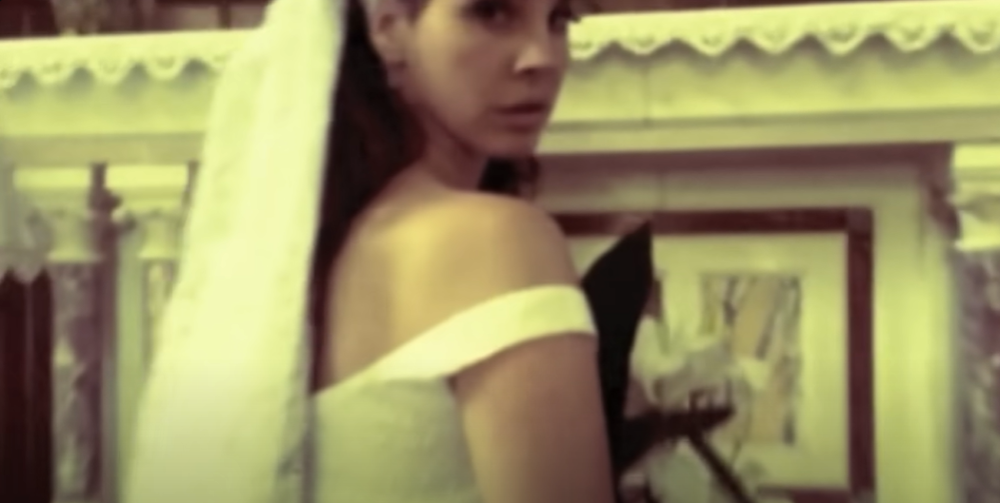
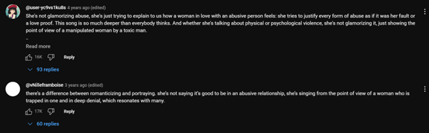

Physical Abuse & Vulnerability in Ultraviolence
The emotional and substance abuse in “Born to Die” is also depicted in “Ultraviolence” and “Pretty When You Cry,” songs from Lana’s second major-label studio album Ultraviolence (2014). Thus, Lana maintains her typical unhopeful aesthetic, singing of a tragic romance with little regard for herself when in a toxic relationship, as "...so often in Lana’s songs (and in real life), the feeling of love sustains despite outrageous behavior," (Grande 209). However, “Ultraviolence” also outwardly depicts physical abuse, not only making the album more controversial, but allowing for Lana’s eventual realization that drugs are not enough to happily continue in these relationships in “Pretty When You Cry” even more impactful. Therefore, through an analysis of Lana’s lyrics, sounds, and visuals, she furthermore establishes her role as a poet highlighting vulnerability and character growth rather than justifying abuse.
In “Ultraviolence,” Lana captures an outwardly controversial scene; she vividly depicts a physically violent relationship, with her loyalty to her lover, “Jim,” washing away any negative connotations towards the situation. With a calm yet melancholic soundscape, Lana sings:
"Jim told me that, he hit me and it felt like a kiss
Jim brought me back, reminded me of when we were kids,”
(“Ultraviolence” 0:36-0:52).
As discussed in class, “Jim” can potentially refer to “Jim Beam,” the alcoholic beverage. I believe this is the optimal conclusion, as Lana’s relationship with alcohol can allow her to seek the same relief in her abusive relationship as getting high in “Born to Die.” In addition, she also uses this metaphor to express her past difficulty with alcoholism. According to Jamie Crossan’s article, “Lana Del Rey: ‘I was sent to boarding school age 14 to get sober’,” Lana was sent to a boarding school at 14 “…to help kick her drinking habit,” (Crossan 2012). Although she is far past this point in her life, it explains why Jim Beam “…reminded [her] of when [they] were kids,” as her relapse when in this abusive relationship reminds her of when she was an alarmingly young alcoholic.
Furthermore, the line “…he hit me and it felt like a kiss,” refers to the song “He Hit Me (It Felt Like a Kiss)” from The Crystals. When comparing the usage of the lyrics in both songs, it seems as if being hit is a sign of love; in other words, the man cares about the woman so much that he hits her to convey that. Although this is a harsh depiction, women such as Lana are “…carrying the message…” of the domestic violence movement by shedding light on the issues “…into wider popular culture,” even if it is a grotesque reality, as Kathanne W. Greene notes in her journal article, “Women Singer-Songwriters as Exemplary Actors: The Music of Rape and Domestic Violence,” (Greene 1). In essence, by providing a realistic depiction of her abusive relationship, Lana is not trying to justify her situation but is instead wanting to resonate with others who may have gone through the same experiences she has through expressing her vulnerabilities.
Throughout the “Ultraviolence” music video, Lana is seen wearing a wedding dress while singing the lyrics to the song. There are some moments, such as from 1:52-1:56, where she is seen kissing the man behind the camera, which we can assume is her lover. The yellow haze filtered on the video in tandem with Lana’s mesmerizing vocals elicits a familiar wistful tone, as if Lana is dreaming of a happy future with her abusive beloved.
As the video progresses to 3:48-4:06, we see Lana walk to an altar alone. This emphasizes the fact that, despite Lana’s devotion to her lover, he does not truly love her, which is why he is not waiting for her at the altar to get married. In essence, this video is testing the bounds of dream and reality; similar to how Lana is trying to see the positives in her abusive relationship in “Born to Die,” she is grasping to find the nonexistent good in the evil, which is further aided by her alcoholism. This notion overall reinforces the common reason why many women stay with their toxic partners.
These are a couple popular comments under the “Ultraviolence” music video, which furthermore reinforce my argument: 
For “Pretty When You Cry,” although there is not an official music video, Lana illustrates the typical unreciprocated relationship filled with drugs and sorrow through her stark vocals and lyrics. However, she learns that the love that she gives to these men is never enough. Thus, Lana concludes that women should not degrade themselves into submission, even if it is the gendered expectation. With a distant guitar and a raw, unembellished voice, Lana notes:
"All those special times
I spent with you, my love
They don’t mean shit compared to all your drugs,”
(“Pretty When You Cry” 1:28-1:44).
With a deeper exploration of previously mentioned themes, Lana furthermore establishes her role as an artist that provides a realistic perspective to a rising cultural issue by illustrating her vulnerabilities concerning drug abuse and toxic relationships. Furthermore, whenever Lana actively addresses her partner’s drug habits as an issue in their relationship, it sparks growth within her character. Thus, when choosing to quit trying to find happiness in her abusive relationship, despite being previously adamant in her stance, Lana is in a position to be actively against the violence portrayed in her songs rather than for it.
Credits: Website Template: https://github.com/yenchiah/project-website-template / Bibliography: README File on GitHub